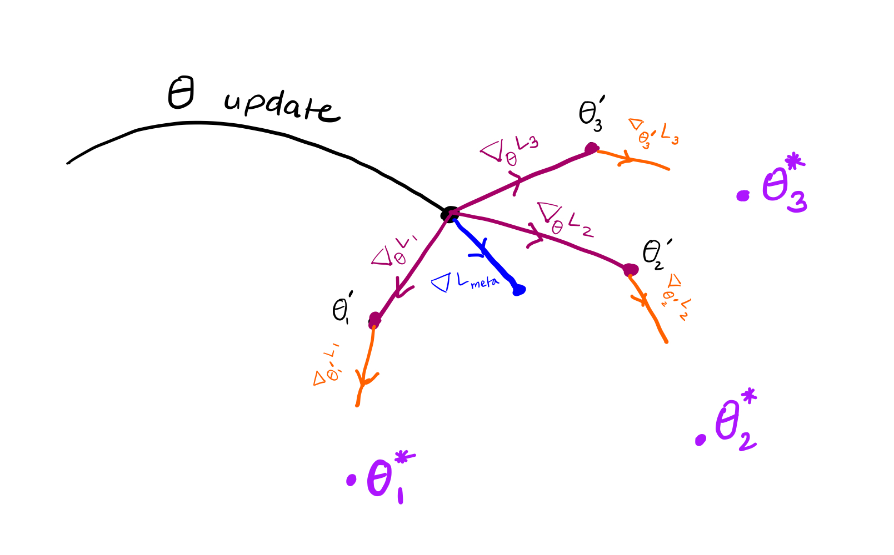
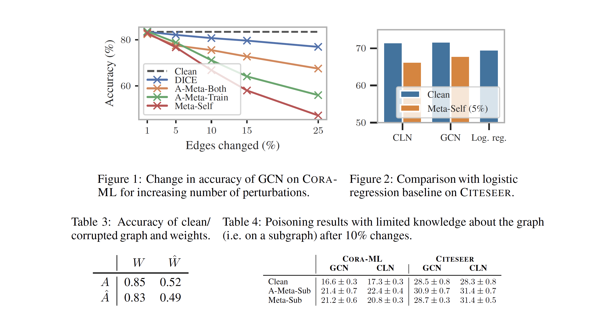
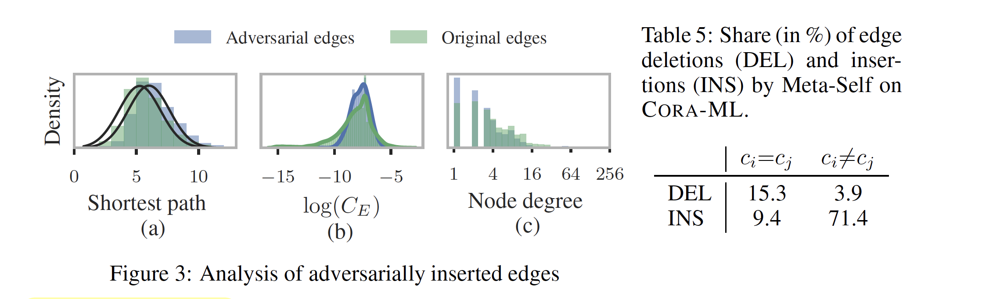

harsha kokel
Attacking GNN with Meta Learning
This article reviews a very exciting ICLR 2019 paper: Adversarial Attacks on Graph Neural Networks via Meta Learning. This was originally written as part of a class assignment at UT dallas.
Daniel Zügner and Stephan Günnemann, ICLR 2019 highlights the weakness of Graph Neural Networks. Since the iid assumption does not hold in the graph data, any perturbation at a single node might have major impacts. This weakness can be leveraged by adversaries to attack GNN. The paper is set in a transductive learning setting where a graph is given along with label to some of the nodes and the task is to predict labels of the remaining nodes. The objective of the adversarial attack is to reduce the overall performance of the model by modifying the training data. So the objective can be formulated as a max-min problem where the attacker wants modify the graph to maximize the loss while the training agent will learn parameters to minimize the loss.
$$ \underset{{G}}{\arg\max } \ \ \underset{\theta}{\arg\min} \ \mathcal{L}_{\text{train}} \left(f_{\theta}({G})\right) , $$
This can be reformulated as following optimization function:
$$ \underset{\hat{G} \in \Phi(G)}{\arg \min} \ {\mathcal{L}_{\mathrm{atk}}}\left(f_{\theta^{\ast}}(\hat{G})\right) \quad \text { s.t. } \quad \theta^{\ast}=\underset{\theta}{\arg \min } \quad \mathcal{L}_{\operatorname{train}}\left(f_{\theta}(\hat{G})\right) $$
Ideally $\mathcal{L}_{\mathrm{atk}} = - \mathcal{L}_{\mathrm{train}}$ but authors also use another option $\mathcal{L}_{\mathrm{atk}} = - \mathcal{L}_{\mathrm{self}}$ where they learn a model to predict the labels of the unlabeled dataset and then try to maximize the prediction error for those nodes. Since the above mentioned objective is a bilevel optimization problem it is a difficult to solve and hence authors propose a meta-learning approach.
Meta-Learning
Recall that in MAML we saw a similar objective where we wanted to optimize parameter $\theta$ such that the loss on individual tasks $\mathcal{T}_i$ is also minimum when adapted from parameter $\theta$:
$$ \underset{\theta}{\arg \min} \sum_{\mathcal{T}_{i} \sim p(\mathcal{T})} \mathcal{L}_{\mathcal{T}_{i}}\left(f_{\theta_{i}^{\prime}}\right) \quad \text { s.t. } \theta_{i}^{\prime} = \underset{\theta_{i}^{\prime} }{\arg \min } \quad \mathcal{L}_{\operatorname{\mathcal{T}_{i}}}\left(f_{\theta}\right) $$
Below is a quick review of MAML equations. Map the colors with the image visualize to the equations.

simulated adaptation / learning / training $(\nabla_{\theta}\mathcal{L}_{T_{i}})$ update performed by the meta-learner is as follows:
$$\theta_{i}^{\prime}=\theta-\alpha \nabla_{\theta} \mathcal{L}_{T_{i}}\left(f_{\theta}\right)$$
meta objective is $\theta_{i}^{\prime}$ should be close to $\theta_i^{\ast}$
$$\underset{\theta}{\arg \min} \ \sum_{T_{i}} \mathcal{L}_{T_{i}}\left(f_{\theta_{i}^{\prime}}\right)$$
$\therefore$ meta update $\left(\nabla \mathcal{L}_{\text {meta }}\right)$ is:
$$ \begin{aligned} \theta & = \theta-\beta \sum_{T_{i}} \nabla_{\theta} \mathcal{L}_{T_{i}}\left(f_{\theta_{i}^{\prime}}\right) \\ & = \theta- \beta\sum_{T_{i}} \nabla_{\theta_{i}^{\prime}} \mathcal{L}_{T_{i}}\left(f_{\theta_{i}^{\prime}}\right) \cdot \nabla_{\theta} \theta_{i}^{\prime} \end{aligned} $$
first order approximation assumes $\nabla_{\theta} \theta_{i}^{\prime}=1$
$$=\theta-\beta \sum_{T_{i}} \mathbin{\color{#EA6B2D}{\nabla_{\theta_{i}^{\prime}}\mathcal{L}_{T_{i}}\left(f_{\theta_{i}^{\prime}}\right)}}$$
Adversarial Meta-Learning
In MAML both the meta objective and the adaptation/learning phase optimized over the same parameters. In this paper, the adaptation/learning phase optimizes model parameters but the meta-objective optimizes the graph $G$. So the equations look quite similar with meta objective optimizing $G$ instead of $\theta$.
Adversarial objective is
$$\underset{\hat{G}}{\arg\min } \ \mathcal{L}_{\text{atk}}\left(f_{\theta^{\ast}}(\hat{G})\right) \quad \text { s.t. } \quad \theta^{\ast}=\underset{\theta}{\arg\min} \ \mathcal{L}_{\text {train }}\left(f_{\theta}(\hat{G})\right)$$
simulated adaptation / learning / training update by the attacker is
$$ \theta =\theta-\alpha \nabla_{\theta} \mathcal{L}_{\text{train}} f_{\theta}(G) $$
meta update:
$$ \begin{aligned} G & = G -\beta \nabla_{G} \mathcal{L}_{\text{atk}}\left(f_{\theta}(G)\right) \\ & =G-\beta \nabla_{f} \mathcal{L}_{\text{atk}}\left(f_{\theta}(G)\right) \bigg[ \nabla_{G} f_{\theta}(G)+\nabla_{\theta} f_{\theta}(G) \nabla_{G} \theta \bigg] \end{aligned} $$
first order approximation $\theta \approx \tilde{\theta}$ where $\left(\nabla_{G} \tilde{\theta}=0\right)$
$$ =G-\beta \nabla_{f} \mathcal{L}_{\text{atk}}\left(f_{\tilde{\theta}}(G)\right) \nabla_{G} f_{\tilde{\theta}}(G) $$
Another major difference between MAML and this paper is the assumption in the first order approximation of the meta-gradients. In MAML, the first order approximations assumes $\nabla_{\theta}\theta_i^{\prime} = 1$ i.e. it assumes the parameters $\theta$ and $\theta^{\prime}$ are essentially the same. Here, in the first order approximation, authors assume that the $\nabla_{\tilde{\theta}}G= 0$ i.e. the graph $G$ is constant (i.e. independent of $\tilde{\theta}$).
In the exact meta-attack version, the graph $G$ used in the simulated learning/adaptation/training phase is constantly optimized by the attacker w.r.t parameters and hence the $\nabla_{{\theta}}G \neq 0$. But for the approximate version, the graph $G$ is optimized only after $t$ steps of simulated adaptation/training/learning iterations. So, the for most of the $\tilde{\theta}$ updates the graph $G$ is gonna be constant. Hence, the parameter $\nabla_{\tilde{\theta}}G = 0$.
Since, the graph modifications are limited to edge manipulations, the optimization objective replaces graph $G$ with adjacency matrix $A$. And since the gradient direction is the direction of maximizing the function and we want to maximize the $L_\text{train/self}$, we use +ve sign for gradient update.
$$ A = A - \beta \ \nabla_{A}\mathcal{L}_\text{atk}(f_\theta(A)) \\ = A + \beta \ \nabla_{A}\mathcal{L}_\text{train/self}(f_\theta(A)) \\ $$
Graph admissibility: $\Phi(G)$
Since the inherent objective of an attack is be unnoticeable there are certain constraints on modifications that the attacker can do on the graph $\hat{G} \in \Phi(G)$
- There is a budget on the number of perturbations allowed. So, $||A−\hat{A}||_0 \leq \Delta$, where $\Delta$ is a budget and $A$ and $\hat{A}$ are adjacency matrix of original and modified graph $G$
- Nodes which was initially connected should remain connected, so no singleton node created as a result of perturbations
- Degree distribution of the graph remains the same.
Extension to graph attributes
To extend the meta learning formulation to modify the graph attributes we can treat the node feature matrix of the graph $X$ as hyper-parameter and reformulate the attack objective as below.
$$ \underset{{X}}{\arg \min} \ {\mathcal{L}_{\mathrm{atk}}}\left(f_{\theta^{\ast}}({X}, A)\right) \quad \text { s.t. } \quad \theta^{\ast}=\underset{\theta}{\arg \min } \quad \mathcal{L}_{\operatorname{train}}\left(f_{\theta}({X}, A)\right) $$
So, the meta gradient equation will be as follows:
$$ X = X + \beta \ \nabla_{X}\mathcal{L}_\text{train/self}(f_\theta(X, A)) $$
Empirical evaluations
Experiments show that the proposed method is indeed able to reduce the classification accuracy of the model from around 82% to 60% by making change in 15% of the edges (Fig 1). Interesting insight is in table 3 is that if parameters $W$ trained with a clean graph $A$ are used on the modified graph $\hat{A}$, it is still able to achieve 83% accuracy on the perturbed graph. But, if the parameters $\hat{W}$ are trained on the perturbed graph $\hat{A}$ the accuracy on the clean as well as perturbed graph is reduced significantly.

The analysis of perturbed graphs reveals that the majority of the perturbations in the graph are edge insertions (table 5). Yet, the mean shortest path of the adversarial graph is higher than the original graph. This might mean that the edges which are removed in the perturbations were some of the key connections.

Critique
The paper brings forth a novel application of meta-learning in the bilevel optimization problems and demonstrates a successfully use case of adversarial attacks. They show both the exact and approximate formulations and their results. The approach was successful in reducing the classification accuracy.
The attacker here is making an assumption about the learning algorithm that will be used for classification, which might not be true in general. In meta-learning since the parameters are shared between the meta-learning and the actual classification model, the assumption on the learning algorithm is valid. However, here the attacker is modifying the training data before the classifier is learned and a different entity is gonna learn classifier. I feel the assumption of the attacker is not justified.
It would be interesting to see the classification accuracy of different GNN models on the $A$ and $\hat{A}$, other than the ones which were used while attacking.
Questions
Q1. How is min max problem $\operatorname{max}_x\operatorname{min}_\theta f(x, \theta)$ solved by this approach?
The problem $\operatorname{max}_x\operatorname{min}_\theta f(x, \theta)$ is solved using meta-gradients by replacing the $\operatorname{min}_\theta$ with meta optimization step, $\theta^\ast$.
Q2. List types of attacks and summarize it one line and discuss differences
- Targeted Attacks: Attacks that are aimed to change prediction of a single example
- Global Attack: Attacks which aim at changing the overall performance of the model
- Evasion Attacks: Exploratory attacks done during test time for e.g. to understand the thresholds of a classifier.
- Poisoning Attacks: Causative attacks done during training to mess up the learning process.
Q3. How is the linear surrogate model obtained from two layer GCN?
Replacing the $\sigma$ activation function with an Identity function $I$, the non-linearity is removed and we can achieve a linear function.
$$ \begin{aligned} f_{\theta}(A, X) & =\sigma\left(\hat{A} \sigma \left(\hat{A} X W_1 \right) W_2 \right) \\ & = \mathbf{I}\left(\hat{A} \mathbf{I} \left(\hat{A} X W_1 \right) W_2 \right) \\ & = \left(\hat{A}^2 X W \right) \\ \text{where, } W & = W_1W_2 \\ \end{aligned} $$
Q4. How is the following equation derived from the MAML paper?
$$\nabla_{A}^{\text {meta }}= \nabla_{f} \mathcal{L}_{\text {atk }}\left(f_{\tilde{\theta}_{T}}(A)\right) \cdot \nabla_{A} f_{\tilde{\theta}_{T}}(A)$$
This equation is derived using the first order approximations discussed above.
Q5. What is the difference between $\theta_t$ and $\tilde{\theta}_t$?
The difference between $\theta_t$ and $\tilde{\theta}_t$ is the notion of constant $G$ vs dynamic $G$ as explained above.
Q6. How can meta-gradient problem formulation be modified to attack node features.
Mentioned above in extension to graph attributes section
Q7/8. Summarize the impact and analysis of the attack
Mentioned above in Emprical evaluations section